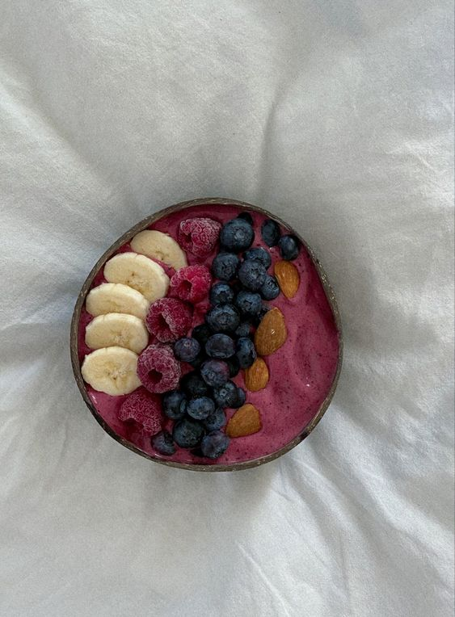

Smoothie Bowl

Ingredients
- 1 Cup frozen mixed berries (strawberries, blueberries, raspberries, etc.)
- ½ Cup almond milk
- 1 Banana
- Granola (for topping)
- Chia seeds (for topping)
- Honey
Instructions
- In a blender, add the frozen berries, banana, and almond milk. Blend until smooth and thick.
You want the consistency to be thicker than a regular smoothie, like soft-serve ice cream. If it's too thick to blend, add a bit more almond milk.
- Once the smoothie is blended to a smooth consistency, pour it into a bowl.
- Top your smoothie with a handful of granola, a sprinkle of chia seeds, and a drizzle of honey.
You can also add fresh fruits like sliced bananas or strawberries if you like.
- Top your smoothie with a handful of granola, a sprinkle of chia seeds, and a drizzle of honey.
You can also add fresh fruits like sliced bananas or strawberries if you like.